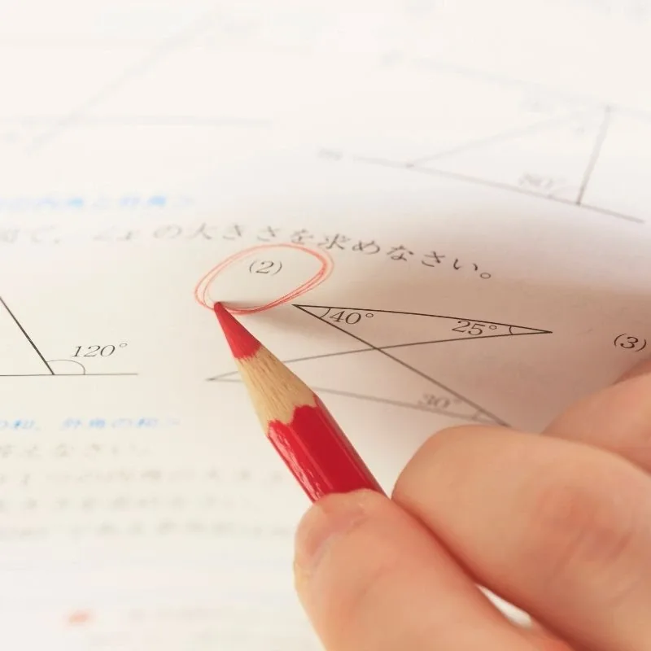

Online Maths tutors for GCSE & A-Level in South Wales
Work through the ideas behind the methods, not just the answer. Our Maths tutoring helps students across Cardiff, Swansea, Newport and South Wales understand core skills, repair gaps and apply them in exam questions.
Check tutor availabilityFind the right help with the topics that matter
Students learn at different speeds. Our tutors can adapt explanations, practice questions and revision to the knowledge gaps behind the difficulty.

GCSE Maths and Numeracy tutoring for Welsh students
We can help students working towards WJEC GCSE Mathematics and Numeracy qualifications, including the new double award where applicable. Tutors first find out which specification and tier the student is taking. That matters for question style, content and assessment.
A-Level Maths tutoring in South Wales
For AS and A-Level learners, sessions can target differentiation, integration, trigonometric identities, mechanics, statistics and challenging multi-step problems, depending on the student’s course.
When a student knows the formula but cannot use it
We work backwards to the missing concept, model the reasoning and practise gradually harder problems. This is particularly useful when a student can follow a worked example but becomes stuck independently.
Supporting students in Cardiff, Swansea, Newport and beyond
Our service reaches pupils and sixth-formers across Cardiff, Swansea, Newport, Bridgend, Caerphilly, the Vale of Glamorgan, Rhondda Cynon Taf and wider South Wales. Lessons are online, with no travel needed.
Live teaching
Ask questions in real time and practise with a tutor.
Exam-board alignment
Bring the exact specification, school topics or papers.
Flexible booking
Arrange lessons subject to tutor availability.
Maths tutoring: questions answered
Quick answers about online tuition, WJEC and finding the right tutor.